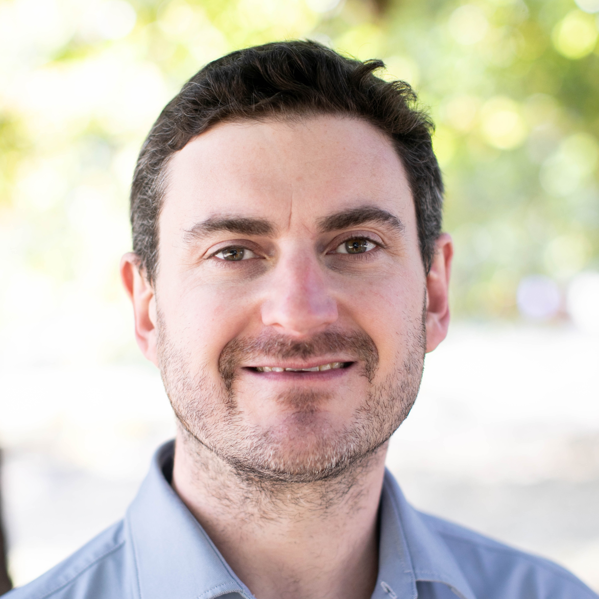

I build digital health companies. Lately I advise founders and their investors.
I'm Stephen Bourke. I co-founded Echo, the UK's fastest-growing digital pharmacy. 500,000 patients. 300 staff. £120m+ ARR. Sold to McKesson in 2021. Before Echo I ran international expansion at LloydsPharmacy Online Doctor and launched the service in Ireland and Australia.
Since the exit I've helped founders, CEOs and growth investors do the hard parts: market entry, operating model, commercial strategy, M&A. I'm most useful where the P&L is moving, the rules are tightening, and the time and money are running out.
Short diagnostics, two to four weeks. Longer engagements three to six months, part-time, inside the team. Early stage I run the founder job: product, brand, fundraising, hiring, operations. Later stage I run commercial: pricing, partnerships, growth, international expansion, M&A from the commercial side. The work is measured in outcomes and P&L, not workshops or slideware. Polite but direct. I work best with founders willing to be wrong, where trust is valued.
I work with people I trust to deliver. Ex-founders, clinicians, scientists, devs, lawyers and operators I've known for years. From setting up 3PLs from scratch to running deep DD, I usually know who to call.
Stephen